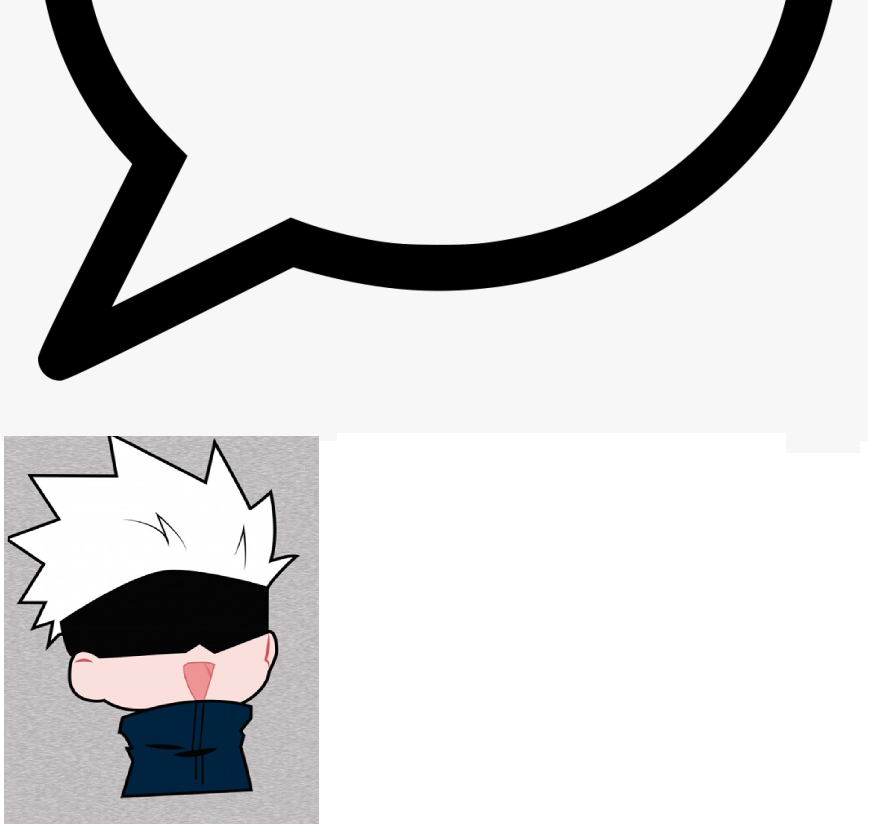

helooo m, t ko bao giờ sẽ nghĩ là t sẽ làm một cái lưu bút kiểu này đâu:))
Chúc m thi điểm tốt đậu NV1 FTU, luôn thuận lợi và thành công trên con đường của mình, luôn luôn giữ sức khỏe tốt và hạnh phúc như bây giờ
